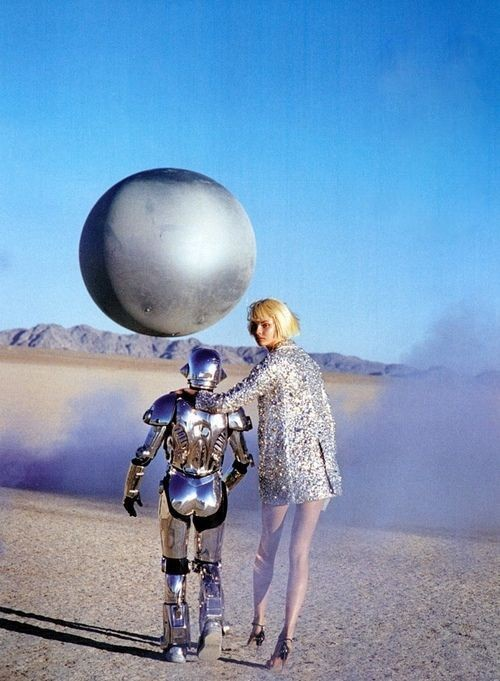

The hardest part of creative direction isn't making decisions — it's knowing which questions to ask before you walk into the room.
The process was simple. I'd describe the creative direction — the insight, the territory, the executions — as if presenting to a sceptical brand director. Then I'd ask two questions: "What's the weakest part of this argument?" and "What would a brand director ask that I can't answer yet?"
Sometimes I'd also ask: "What are three reasons a client might reject this, and which one is most legitimate?"
The questions it generated were rarely questions I hadn't thought of. They were questions I'd thought of and convinced myself didn't matter.
Having them asked back — neutrally, without the social weight of a colleague or the political weight of a client — created space to sit with them honestly. It also helped me identify the parts of the work I was most attached to. Attachment is usually where the bias lives.
The most useful output was when it identified a gap between my stated rationale and what the work actually did. "You've said this is about empowerment, but every execution shows someone being helped. Are those the same thing?"
It can't tell you if the work is good. It can tell you if the argument is consistent, if the logic holds, if the stated intent matches the execution. It can't tell you if the work moves people — because it doesn't know what moves people, only what people say about what moves them.
It also has no stake in the outcome. The best creative feedback comes from people who care about the work almost as much as you do. That absence of stakes means the model is generous in ways that aren't always useful.
Do this earlier in the process, not just before presentation. The best questions are the ones that can still change the work. By presentation day, you're resolving the argument, not improving the work.
I'd also be more deliberate about the role I'm asking it to play. "Sceptical client" produces different questions than "curious strategist" or "creative peer who's seen this work three times." The persona matters.